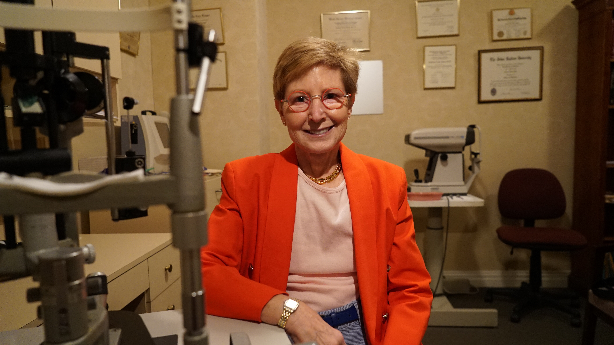
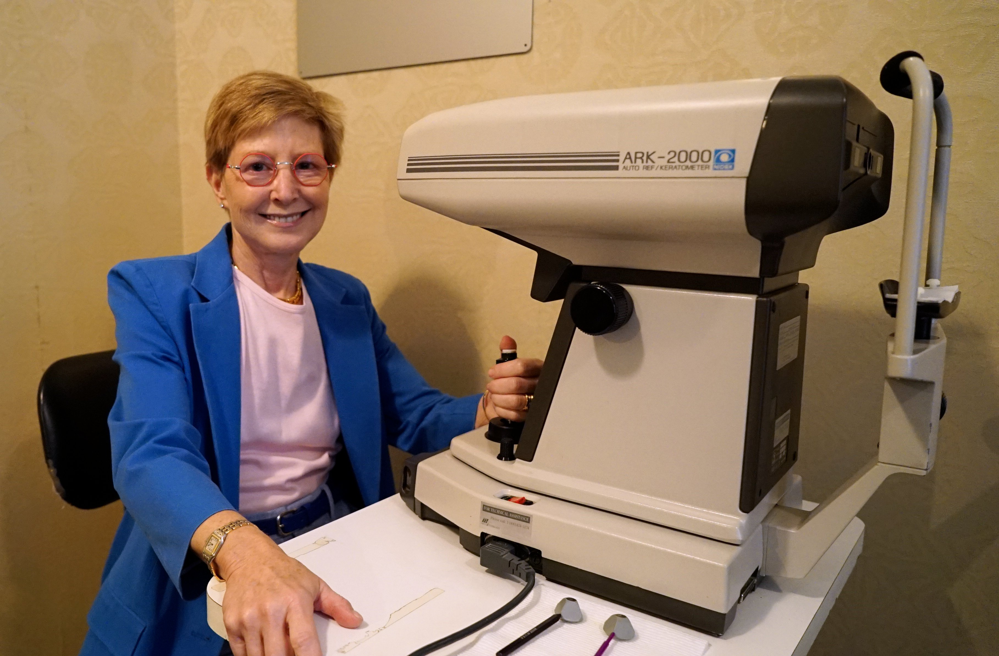

Pediatric & Adult Ophthalmology · Manhattan
Dr. Hilary Ronner treats children and adults with warmth, precision, and a lifelong passion for the specialty — forging lasting relationships with every patient she sees.
Book an Appointment

Welcome
I'm a practicing ophthalmologist based in Manhattan, treating children and adults for over thirty-five years. My office is located at 66 East 79th Street, between Park and Madison Avenues on the Upper East Side.
Whether you're bringing a child in for their first full eye exam or seeking care for an adult condition, you'll find a warm, attentive practice where you are truly known as a patient — not just a chart.
Dr. Ronner is currently accepting new patients.
Learn About Dr. RonnerEducation & Training